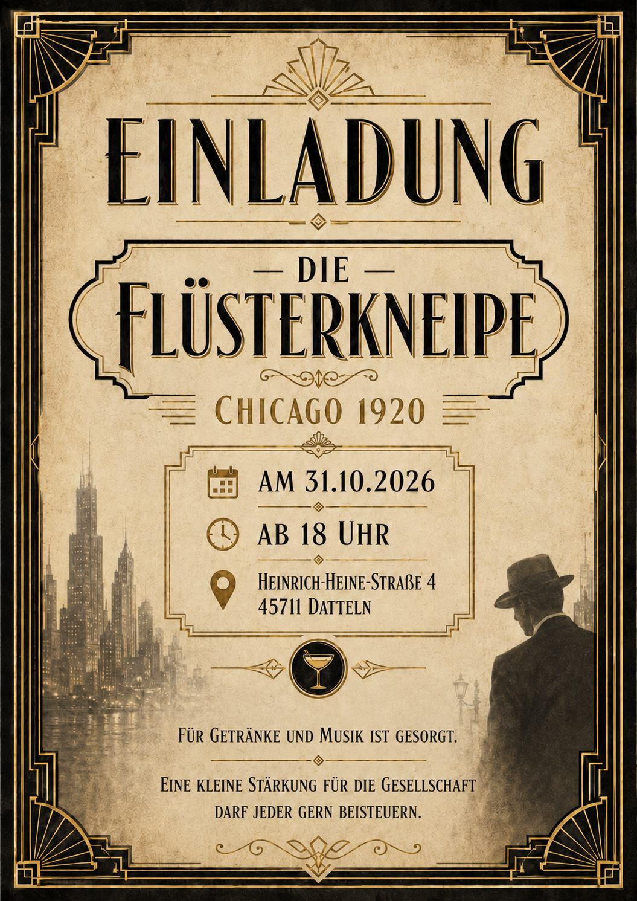
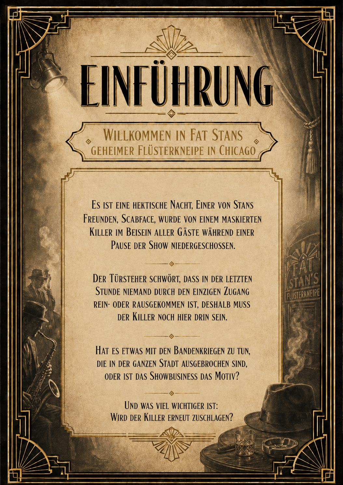
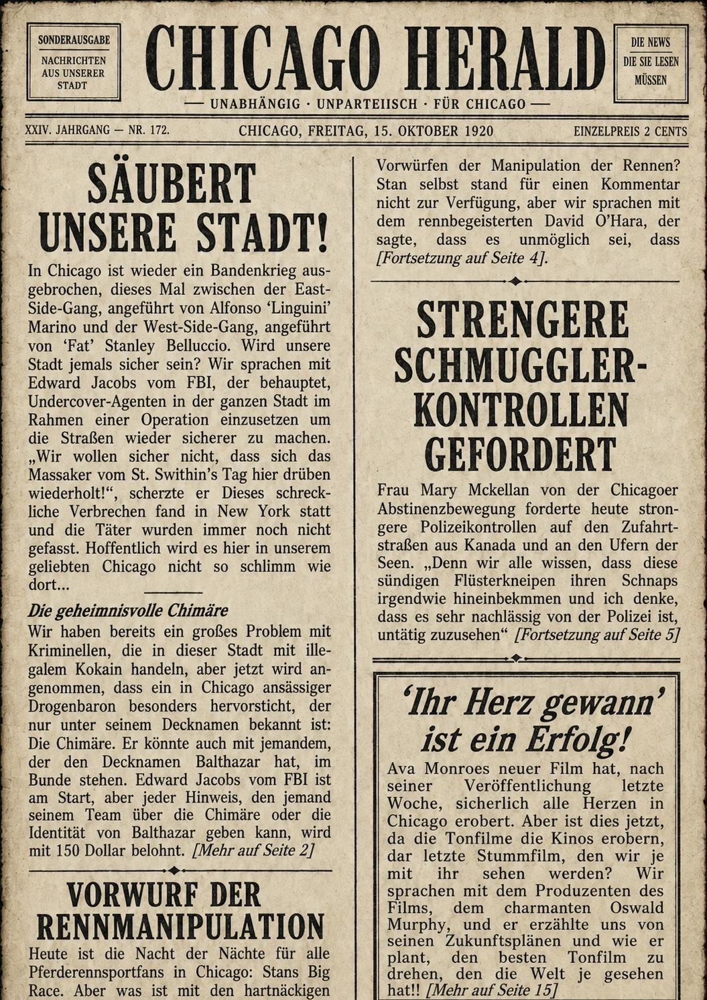
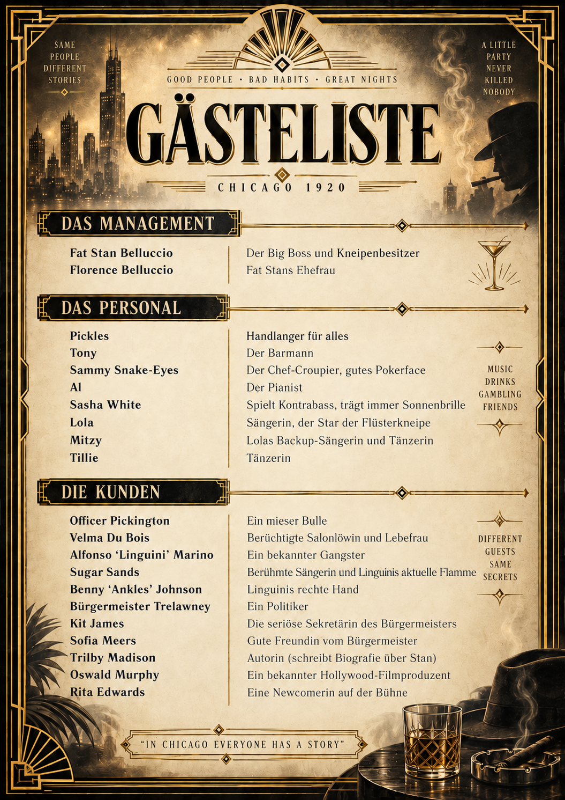

Chicago · 1920 · streng vertraulich
Fat Stan's
Geheime Flüsterkneipe
Tonight · Private Entrance
Willkommen in Fat Stan's geheimer Flüsterkneipe in Chicago.
Nur geladene Gäste erhalten Zutritt. Dein persönlicher Code öffnet ausschließlich deine eigene Akte.
Password required
Hinter jedem Code steckt genau eine Rolle – und nur deren eigenes Briefing.
Persönliche Akte freigegeben
Vertrauliches Vorab-Briefing
Lies deine Akte. Merke dir deine Geheimnisse. Dann tritt ein.
📜
Deine Rollenakte
Deine vollständige Charakterbeschreibung öffnen.
🕵️
Briefing
10 Fragen. Nur dein Rollenwissen.
📰
Unterlagen
Einladung, Einführung und Chicago Herald.
✒️
Meine Notizen
Deine persönlichen Gedanken und Merkpunkte.
🎯
Ziele & Personen
Deine Ziele und was du über andere Personen weißt.
10 Fragen
Nur Rollenwissen
3 Antwortmöglichkeiten
Unterlagen der Flüsterkneipe
Vertrauliche Unterlagen
Diese Dokumente sind für alle geladenen Gäste bestimmt.

Einladung
Einführung
Chicago Herald
GästelistePersönlicher Spickzettel
Deine Ziele & andere Personen
Nur Informationen aus deiner eigenen Rollenbeschreibung.
Deine Ziele
Was du über andere Personen weißt
Persönliche Notizen
Nur für deine Augen
Deine Notizen werden nur auf diesem Gerät im Browser gespeichert.
Automatische Speicherung aktiv.
Persönliches Briefing abgeschlossen